측량및지형공간정보기사 (2010-09-05 기출문제)
1과목: 측지학 및 위성측위시스템
1. 고정점으로부터 50Km 떨어져 있는 미지점의 좌표를 GPS관측으로 결정하려고 한다. 다음 중 가장 우수한 결과를 확보할 수 있는 조건은?
- 고정국 및 미지점에 각각 1주파용 수신기 및 안테나로 관측하고 위성 궤도력은 보통력을 사용한다.
- 고정국 및 미지점에 각각2주파용 수신기 및 안테나로 관측하고 위성궤도력은 정밀력을 사용한다.
- 고정국 및 미지점에 각각2주파용 수신기 및 안테나로 관측하고 위성궤도력은 보통력을 사용한다.
- 고정국은 2주파용 수신기 및 안테나, 미지점은 1주파용 수신기 및 안테나로 관측하며 위성궤도력은 정밀력을 사용한다.
(정답률: 82%)

2. 시간오차를 제거한 3차원 위치결정에 필요한 최소 위성대수는 몇 대 인가?
- 1대
- 2대
- 3대
- 4대
(정답률: 81%)
3. 지오이드(geoide)에 대한 설명으로 옳지 않은 것은?
- 평균해수면을 육지까지 연장했을 때의 가상적인 지구 형상이다.
- 중력의 방향에 수직인 등포텐셜면을 이룬다.
- 회전타원체와 동일한 형상을 이룬다.
- 측지학에서 참지구로 생각하는 지구형상이다.
(정답률: 89%)
4. 어느 지점의 자침 편각이 W 6.5° 이고 복각은 N 57°일 때 설명으로 옳은 것은?
- 이 지점에서 진북은 자침의 N극보다 서쪽으로 6.5° 방향이다.
- 이 지점에서 진북은 자침의 N극보다 동쪽으로 6.5° 방향이다.
- 이 지점에서 자침은 N극은 수평선보다 6.5° 기운다.
- 이 지점에서 자침의 S극은 수평선보다 6.5° 기운다.
(정답률: 82%)
5. 구면 삼각형의 면적을 4525km2, 지구의 곡률반경을 6370Km라고 할 때 구과량은?
- 7“
- 16”
- 23“
- 30”
(정답률: 71%)
6. 지구상의 어떠한 점에서 지오이드에 대한 연직선이 적도면과 이루는 각을 무엇이라고 하는가?
- 측지위도
- 화성위도
- 천문위도
- 지심위도
(정답률: 77%)
7. 표고 326.42m의 평탄지에서 거리 500m를 평균해면상의 값으로 보정하려고 할때 보정량은? (단, 지구반경은 6370km로 한다.)
- -2.56cm
- 1.28cm
- -5.12cm
- 3.28cm
(정답률: 79%)
8. GPS 신호는 두 개의 주파수를 가진 반송파에 의해 전송된다. 두개의 주파수를 쓰는 가장 큰 이유는?
- 수신기 시계오차 제거
- 대류권 오차 제거
- 전리층 오차 제거
- 다중경로 제거
(정답률: 72%)
9. 중력측지에 대한 설명으로 옳지 않은 것은?
- 중력은 만유인력에 의한 지구의 인력과 지구 자체에 의한 원심력 벡터에 합력이며 방향은 연직방향이다.
- 지구의 형상은 중력과 밀접한 관계가 있으며 적도에 가까울수록 중력은 증가한다.
- 지하에 밀도가 큰 물질이 있는 경우에 중력이상이 정(+)으로 나타난다.
- gal은 중력의 단위이다.
(정답률: 84%)
10. 위성측량에서 위성의 궤도와 임의 시각의 궤도상의 위치를 결정 할 수 있는 위성의 궤도요소가 아닌것은?
- 궤도의 장반경
- 승교점(ascending node)의 적위
- 궤도 경사각
- 궤도 이심율(eccentricity)
(정답률: 90%)
11. 지표상 두 지점간의 최단거리선으로서 두 지점과 지심을 포함하는 평면과 지표면의 교선을 무엇이라 하는가?
- 측지선
- 자오선
- 묘유선
- 항정선
(정답률: 80%)
12. 지자기 측량에서 필요한 보정과 관계없는 것은?
- 시간적 변화에 따른 보정
- 시준점 보정
- 온도 보정
- 에트베스 보정
(정답률: 70%)
13. GPS 신호에서 C/A 코드는 1.023Mbps로 이루어져 있다. GPS 신호의 전파 속도를 300000km/sec 로 가정 했을 때 코드 1비트 사이의 간격은 약 몇 m인가?
- 약 2.93m
- 약 29.3m
- 약 293m
- 약 2930m
(정답률: 82%)
14. 측지측량에 대한 설명으로 옳지 않은 것은?
- 측량에 정확도가 1/106 일 경우 반경 11km 이내의 범위에서 건설되는 철도, 수로 및 선로 등에 대한 건설측량도 측지측량에 속한다
- 측량의 정확도가 1/106 일 경우 측지측량의 범위는 관측점을 중심으로 한 원의 면적이 약 400km2 이상인 넓은 지역에 해당 되며 대륙간의 측량도 포함된다.
- 우리나라 전국의 정밀 측량망 형성을 위한 삼각측량, 고저측량, 삼변측량도 축지측량에 속한다.
- 측지측량은 지구곡률을 고려하여 지표면을 곡면으로 보고 행하는 정밀측량이다.
(정답률: 69%)
15. 대류층 지연 보정 모델과 관련이 없는 것은?
- Niell 모델
- Hopfield 모델
- Saastamoinen 모델
- Stokes 모델
(정답률: 86%)
16. GPS 위성 시스템에 관한 설명 중 옳지 않은 것은?
- 위성의 고도는 지표면상 평균 약 20200km이다.
- 기준계는 GRS80를 사용한다.
- 각 위성들은 모두 상이한 코드정보를 전송한다.
- 위성의 궤도주기는 약 11시간 58분이다.
(정답률: 67%)
17. 상대측위 방법(간섭계측위)의 설명 중 옳지 않은 것은?
- 전파의 위상차를 관측하는 방식으로서 정밀 측량에 주로 사용된다.
- 위상차의 계산은 단순차, 2중차, 3중차의 차분 기법을 적용 할 수 있다
- 수신기를 1대 사용하여 모호 정수를 구한 뒤 측위를 실시한다.
- 위성과 수신기간 전파의 파장 개수를 측정하여 거리를 계산한다.
(정답률: 80%)
18. GPS의 구성에서 GPS 위성의 궤도를 추적하고 운영 관리하는 지휘 통제소 역할을 하는 부분은?
- 사용자부분
- 우주부분
- 제어부분
- 송신부분
(정답률: 75%)
19. UTM 좌표계에 대한 설명으로 옳지 않은 것은?
- 세계를 하나의 통일된 좌표로 표시하기위한 목적으로 고안되었다.
- 좌표지역대의 역할을 위해 위도는 8°, 경도는 6° 간격으로 분할 하였다.
- 우리나라의 UTM좌표는 경도 127°와 극지방을 좌표계의 원점으로 하는 55S와 56S 지역대에 속한다.
- 중앙자오선에서 축척계수는 0.9996 이다.
(정답률: 85%)
20. 차분(Differencing)을 이용한 측위에 대한 설명으로 옳지 않은 것은?
- 공통된 위성으로부터 수신된 신호는 같은 궤도 오차를 가진다.
- 하나의 수신기에 수신된 여러 위성으로부터 신호는 같은 수신기 시계오차를 가진다.
- 기지점과 미지점간의 거리가 짧다면 대기 효과는 비슷하게 나타난다.
- 단일차분에 의해서 위성과 수신기의 시계 오차를 동시에 제거할 수 있다.
(정답률: 90%)
2과목: 응용측량
21. 원곡선 설치구간의 노선을 개량하고자 아래 그림과 같이 구곡선 반경(Ro) 200m를 신곡선 반경 (Rn)500m로 크게 했을 경우 전체 노선길이는 약 얼마만큼 단축되는가?
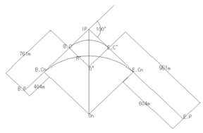
- 185m
- 190m
- 195m
- 2⑤m
(정답률: 48%)
22. 유속계로 1회 관측시 회전수(N)가 2.6일 때 유속이(V) 0.90m/sec 이었다. 유속계의 상수 a, b는 얼마인가? (단, V=aN+b이다.)
- V=0.25N+0.25
- V=0.35N+0.35
- V=0.25N+0.45
- V=0.35N+0.55
(정답률: 53%)
23. 종곡선이 상향기울기 2.5/1000, 하향기울기-(40/1000)일 때 곡선반경이 2000m이면 곡선장 (L)은?
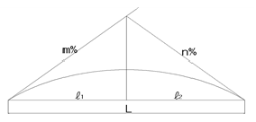
- 85m
- 45.2m
- 42.5
- 35.5m
(정답률: 57%)
24. 도로의 종단곡선으로 많이 쓰이는 곡선은?
- 3차포물선
- 2차 포물선
- 클로소이드 곡선
- 렘니스케이트곡선
(정답률: 48%)
25. 전자파의 반사 성질을 이용하여 지하의 각종 현상을 밝히는 측량 방법은?
- 지중 레이다 측량기법
- 전자유도 측량기법
- 음파측량기법
- GPS측량기법
(정답률: 48%)
26. 유량관측에 관한 일반적인 설명으로 옳지 않은 것은?
- 수로내에 둑을 설치하고, 사방댐의 월류량의 공식을 이용하여 유량을 구할 수 있다.
- 벤츄리미터, 오리피스 등의 계기(計器)를 이용하여 관로 등의 유량을 구하 수 있다.
- 유량관측은 직류부로서 흐름이 일정하고, 하상 경사가 일정한 곳이 좋다
- 유량관측은 수위 변화에 의해 하천 횡단면 형상이 급변하는 곳이 좋다
(정답률: 86%)
27. 기점(도로시작점)으로부터 425.50m에 교점 (I.P)이 있고, 곡률반경 R=250m, 교각 I=45° 30'인 단곡선에서 시단현의 편각은? (단, 중심말뚝 간격은 20m이다.)
- 2° 11' 34“
- 2° 12' 56”
- 2° 13' 10“
- 2° 13' 35”
(정답률: 65%)
28. 평수위에 대한 설명으로 옳은 것은?
- 355일 이상 이보다 적어지지 않는 수위
- 275일 이상 이보다 적어지지 않는 수위
- 어떤 기간 중 이것보다 높은 수위와 낮은 수위의 관측 횟수가 똑같은 수위
- 일정 기간 중 제일 많이 생긴 수위
(정답률: 64%)
29. 경관의 구성요소에서 인간의 속성을 나타내는 직업, 연령, 건강상태, 교육환경에 속하는 계는?
- 대상계
- 경관장계
- 시점계
- 형상계
(정답률: 58%)
30. 그림에서 면적을 m:n=1:3으로 분할하고자 한다. 밑변의 길이가 BC가 100m일때 BD의 길이는 얼마인가?
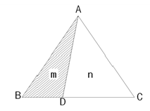
- 25m
- 33m
- 67m
- 75m
(정답률: 65%)
31. 터널측량의 순서를 바르게 나타낸 것은?
- 예측 - 답사 - 지표설치 - 지하설치
- 답사 - 예측 - 지표설치 - 지하설치
- 예측 - 지하시설 - 지표시설 - 답사
- 답사 - 지표설치 - 지하설치 - 예측
(정답률: 74%)
32. 평균유속을 구하는 방법에 대한 설명으로 옳지 않은 것은?
- 1점법은 수면부터 수심의 50% 깊이의 유속을 평균 유속으로 한다.
- 2점법은 수면부터 수심의 20%, 80% 깊이의 유속을 측정하여 구한다.
- 3점법은 수면부터 수심의 20%, 60%, 80%깊이의 유속을 측정하여 구한다.
- 4점법은 수면부터 수심의 20%, 40%, 60%, 80% 깊이의 유속을 측정하여 구한다.
(정답률: 48%)
33. 클로소이드 곡선에 관한 설명으로 옳지 않은 것은?
- 곡률반경이 곡선의 길이에 비례하는 완화 곡선이다.
- 일정 속도로 달리는 차량에서 앞바퀴의 회전속도를 일정하게 유지할 경우의 차량궤적이다.
- 클로소이드의 크기는 매개변수 A에 의해 결정된다.
- 클로소이드에서 (곡선반경 =곡선장 =클로소이드의 매개변수)인 점을 클로소이드의 특성점이라 한다.
(정답률: 37%)
34. 삼각점을 이용하여 터널 입구 A와 B의 좌표값에 대한 결과가 표와 같다. 측선 AB의 거리와 방향은?
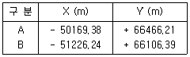
- 거리 : 1116.43m, 방향 18° 48' 06“
- 거리 : 1116.43m, 방향 198° 48' 06“
- 거리 : 380.55m, 방향 18° 48' 06“
- 거리 : 380.55m, 방향 198° 48' 06“
(정답률: 45%)
35. DEM의 전체 토량과 절토량 및 성토량이 균형을 이루는 계획 지반고로 옳게 짝지어진 것은?
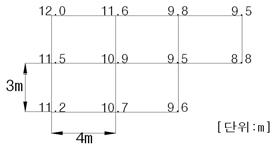
- 631.20m3, 10.52m
- 631.20m3, 11.18m
- 670.50m3, 10.52m
- 670.50m3, 11.18m
(정답률: 53%)
36. 터널 완성 후에 실시하는 측량과 관계가 먼 것은?
- 터널 내외 연결측량
- 중심선측량
- 고저측량
- 단면측량
(정답률: 47%)
37. 정사각형의 면적을 관측하기 위하여 거리 관측을 실시한 결과의 정확도가 K라고 할 때, 면적 측량의 정확도는?
- K2
- 2K
- K/2
- 2/K
(정답률: 50%)
38. 직각좌표 ABCD 4점을 꼭지점으로 한 4각형 ABCD의 면적은? (단위 : m)
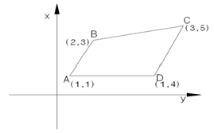
- 2m2
- 3m2
- 4m2
- 5m2
(정답률: 67%)
39. 편각법에 의한 단곡선의 측설에 있어서 그림과 같이 호의 길이는 20m를 현의 길이 20m로 간주하는 경우, δ1과 δ2 의 차이는 얼마인가? (단, 단곡선의 반지름(R)은 190m이다.)
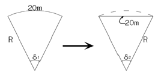
- 약 1“
- 약 5”
- 약 10“
- 약 15”
(정답률: 53%)
40. 토지구획정리측량의 확정측량에 관한 설명으로 가장 적합한 것은?
- 토지구획내의 기준점, 다각점, 수준점 등의 계획도를 작성하기 위한 측량이다.
- 토지구획정리사업 시행구역과 인접하는 사유지 또는 공공용지와의 결계를 명확히 하여 시행하는 총 면적을 확정하는 측량이다.
- 건축물 이전, 도로 등의 기타 공사가 완료된 후 공공시설물 경계점 및 필지경계점의 위치를 관측하고 가구(街區)의 형상, 필지의 형상, 면적을 검사하여 이상의 유무를 확인하는 측량이다.
- 공공용지인 도로, 수로, 공원 등과 사유지인 택지계를 기본설계에 기초하여 중심점, 가구점을 좌표값에 따라 현지에 표시하는 작업이며, 환지면적을 확보하여 필지 말뚝을 현지에 설치하는 작업을 말한다.
(정답률: 60%)
3과목: 사진측량 및 원격탐사
41. 다음 중 항공사진의 보조자료와 거리가 먼 것은?
- 사진지표(Fiducial mark)
- 부점(Floating mark)
- 촬영고도
- 수준기
(정답률: 65%)
42. 다음 중 사진판독 요소가 아닌 것은?
- 과고감
- 상호위치관계
- 질감
- 헐레이션
(정답률: 53%)
43. 원격탐사의 정보처리흐름으로 옳은 것은?
- 자료수집 – 자료변환 – 방사보정 – 기하보정 – 판독응용 - 자료보관
- 자료수집 – 방사보정 – 기하보정 – 자료변환 – 판독응용 - 자료보관
- 자료수집 – 자료변환 – 판독응용 – 기하보정 – 방사보정 - 자료보관
- 자료수집 – 방사보정 – 자료변환 – 기하보정 – 판독응용 - 자료보관
(정답률: 46%)
44. 조직내 많은 부서가 공동으로 필요로 하는 다양한 지리정보를 손쉽게 취급할 수 있도록 클라이먼트-서버 기술을 바탕으로 시스템을 통합시키는 GIS기술을 무엇이라 하는가?
- Professional GIS
- Internet GIS
- Component GIS
- Enterprise GIS
(정답률: 65%)
45. 표고 100m 상의 삼각점 A,B를 사진 상에서 관측 하였더니 두 점간의 거리가 8.4Cm이고, 축척 1:25,000 지도 상에서는 3.6Cm 이었다. 이 사진의 촬영고도(표고)는? (단, 사진기의 초점 거리는 15Cm 이다.)
- 약 1600m
- 약 1700m
- 약 1800m
- 약 1900m
(정답률: 62%)
46. 항공사진 촬영에서 사진축척 1/20000, 허용 흔들림을 0.02mm, 최장 노출시간을 1/125초로 할 때 항공기의 운항속도는 얼마로 하여야 하는가?
- 90Km/h
- 180Km/h
- 270Km/h
- 360Km/h
(정답률: 47%)
47. 다음 중 상업용 위성으로 1m의 공간해상도를 갖는 위성은?
- KOMPSAT-1(아리랑 위성 1호)
- IKONOS
- SPOT
- LANDSAT
(정답률: 48%)
48. 초점거리 150mm, 사진 크기 23Cm × 23Cm의 카메라를 사용하여 촬영고도 4,500m에서 촬영된 평지에 대한 연직사진이 있다, 서로 이웃하는 2장의 사진에서 주점 간 거리를 1:25,000지형도 상에서 측정하니 96.6mm인 경우 이 두 사진의 종중복도는?
- 55%
- 60%
- 65%
- 70%
(정답률: 42%)
49. 평균고도 120m인 지형을 초점거리 120mm인 사진기로 촐영고도 3,300m에서 촬영한 항공사진 1장이 포함하는 면적은? (단, 사진크기는 23×23 Cm이다.)
- 32.42km2
- 37.15km2
- 40.11km2
- 52.35km2
(정답률: 53%)
50. 절대표정요소를 구할 수 있는 경우는?
- 동일 직선상에 위치한 5개의 수직기준점
- 동일 직선상에 위치한 3개의 3차원 지상기준점
- 동일 직선상에 위치하지 않은 5개의 수직 기준점
- 동일 직선상에 위치하지 않은 4개의 3차원 지상기준점
(정답률: 39%)
51. 사진기의 경사, 지표면의 기복을 수정하고 등고선을 삽입하여 집성한 사진지도는?
- 반조정집성사진지도
- 조정집성사진지도
- 정사사진지도
- 약조정집성사진지도
(정답률: 30%)
52. 수치지도의 등고선 레이어를 이용하여 수치지형 모델을 생성할 경우 필요한 자료처리 방법은?
- 보간법
- 일반화 기법
- 분류법
- 자료압축법
(정답률: 70%)
53. GIS에서 많이 사용되는 관계형 데이터베이스 모형의 장점에 해당되지 않는 것은?
- 정보를 추출하기 위한 질의의 형태에 제한이 없다.
- 모형 구성이 단순하고 이해가 빠르다.
- 테이블의 구성이 자유롭다.
- 테이블의 수가 상대적으로 적어 저장 용량을 상대적으로 적게 차지한다.
(정답률: 62%)
54. 지형공간정보체계의 자료 입력과정에서 인쇄되어 있는 기존의 지도를 입력하여 다른 수치지도와 벡터기반의 중첩분석을 실시하기 위한 방법으로 가장 적당한 것은?
- 스캐닝 후 벡터라이징 작업으로 선형 입력
- 스캐닝 후 영상 도면으로 사용
- 컴퓨터 마우스를 이용하여 수동적으로 입력
- 도면을 디지털 촬영 후 사진측량 방법으로 취득
(정답률: 48%)
55. 회전주기가 일정한 인공위성에 의한 원격탐사의 일반적인 특징이 아닌 것은?
- 넓은 지역을 단시간에 관측할 수 있다.
- 원하는 위치 및 시기 지정이 용이하다.
- 반복 관측이 가능하다.
- 얻어진 영상은 정사투영에 가깝다.
(정답률: 55%)
56. 사진측량의 장점이 아닌 것은?
- 동적측량이 가능하다.
- 기상조건에 영향을 거의 받지 않는다.
- 측량의 정확도가 균일하다.
- 분업화에 의한 작업능률성이 높다.
(정답률: 64%)
57. 위치기반서비스(Location Based Services)의 설명으로 옳지 않은 것은?
- 무선통신망을 기반으로 위치 확인 기술을 이용해 이용자나 주요 대상물의 위치를 파악하고 이와 관련된 응용 서비스를 제공하는 시스템 및 서비스를 통칭한다.
- 다양한 위치기반 콘텐츠의 개발과 무선통신 환경의 개선을 통해 유비쿼터스 시대의 핵심 기술로 대두되고 있다.
- 위치기반서비스는 무선측위, 모바일장비, LBS 플랫폼, 무선네트워크, LBS응용서비스기술이 기반 기술로 요구 된다.
- 위치기반 서비스는 데스크탑 PC를 활용하여 고객관리 및 분석, 입지분석 등 다양한 공간 분석을 제공하는 서비스이다.
(정답률: 63%)
58. 2차원 쿼드트리(quadtree)에 대한 설명으로 옳지 않은 것은?
- 공간 자기유사성의 원리(spatial autocorrelation principle)를 이용하고 있다.
- 이산필드(discrete field)의 경우 저장공간이 절약된다.
- 인접한 자료가 멀리 저장되어 검색에 비효율적이다.
- 자료는 노드와 포인터로 저장된다.
(정답률: 43%)
59. 동서 20km, 남북 10km 지역을 사진축척 1:15,000, 종중복도 60%, 횡중복도 30%로 촬영하고자 할 때 필요한 입체모델 수는? (단, 사진크기는 23cm×23cm, 촬영방향은 동서방향으로 한다.)
- 56매
- 60매
- 70매
- 75매
(정답률: 27%)
60. 일반적으로 지리정보시스템을 구현하기 위한 공간 자료는 Vector Data Model과 Raster Data Model로 나누어진다. 다음 공간정보 파일 포맷 중 Raster Data Model과 거리가 먼 것은?
- filename.tif
- filename.img
- filename.shp
- filename.bmp
(정답률: 53%)
4과목: 지리정보시스템
61. 경중에 관한 설명으로 옳지 않은 것은?
- 경중률은 관측횟수에 비례한다.
- 경중률은 노선거리에 반비례한다.
- 경중률은 혹률오차의 제곱에 비례한다.
- 경중률은 표준편차의 제곱에 반비례한다.
(정답률: 50%)
62. 수평각관측 방법에 대한 설명으로 옳지 않은 것은?
- 단각법은 하나의 각을 1번 관측하는 것으로 시준 오차와 읽기오차가 발생된다.
- 배각법은 방향각법에 비래 읽기 오차가 크다.
- 각관측법은 수평각 관측법 중 가장 정확한 값을 얻을 수 있다.
- 방향각법은 한 측점 주위의 각이 많을 경우 이용하는 방법이다.
(정답률: 13%)
63. 1:50000 국가기본도 1도엽이 차지하는 지상의 면적(범위)은?
- 1' × 1'
- 3' × 3'
- 7.5' × 7.5'
- 15' × 15'
(정답률: 48%)
64. 측량결과가 표와 같을 때 P점의 표고는?
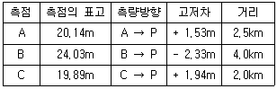
- 21.75m
- 21.72m
- 21.70m
- 21.68m
(정답률: 28%)
65. 아래 그림과 같이 관측된 거리를 최소제곱법으로 조정하기 위한 조건방정식으로 옳은 것은?
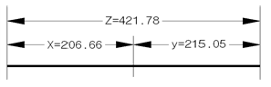
- vz = -vx + vy + 0.07
- vz = vx + vy - 0.07
- vz = vx + vy + 0.07
- vz = -vx - vy - 0.07
(정답률: 53%)
66. 강철테이프에 의한 거리측정값의 보정에 있어서 처짐에 대한 보정량 계산과 거리가 먼 것은?
- 단위중량
- 지점간의 거리
- 프아송 비
- 장력
(정답률: 53%)
67. 수준측량에서 전시와 후시의 거리를 같게 하는 것이 좋은 가장 큰 이유는?
- 레벨의 시준선 오차 소거
- 망원경의 시야 변경
- 표척의 눈금오차 소거
- 표척의 기우기 오차 소거
(정답률: 60%)
68. 등고선의 성질에 대한 설명으로 옳지 않은 것은?
- 등고선과 최대 경사선은 수직을 이룬다.
- 등고선은 교차하거나 합쳐지지 않는다.
- 경사가 같은 곳에서는 등고선간의 간격도 같다.
- 등고선은 도면의 안 또는 밖에서 반드시 폐합한다.
(정답률: 57%)
69. 등고선 간격이 2m인 지형도에서 94m 등고선상의 A점과 128m 등고선상의 B점을 연결하여 기울기 8/100의 도로를 개설 하였다 면 AB간 도로의 실제길이는 약 얼마인가?
- 420m
- 422m
- 424m
- 426m
(정답률: 43%)
70. 수평각 관측에서 수평축과 시준축이 직교하지 않음으로써 일어나는 각 오차의 소거방법으로 옳은 것은?
- 정.반위 관측
- 반복법관측
- 방향각법 관측
- 조합각관측법
(정답률: 65%)
71. 줄자를 사용하여 거리관측을 한 결과가 50m 이었다. 이때 줄자의 중앙이 초목으로 인하여 직선으로 부터 50cm 떨어지게 굽어졌다면 거리 오차의 크기는?
- 0.⑤m
- 0.04m
- 0.02m
- 0.01m
(정답률: 40%)
72. 배각 관측법에서 1각에 생기는 시준오차 ±5“, 읽기오차 ±8”로 4회(4배각) 관측한 각 오차는?
- ±4.00“
- ±4.53“
- ±5.00“
- ±5.⑤“
(정답률: 38%)
73. A점의 좌표가(-152.32m, -216.22m), B점의 좌표가(231.11m,30.21m)일 때 AB측선의 방향각은?
- 32° 43' 44“
- 42° 44' 44“
- 57° 15' 44“
- 57° 16' 16“
(정답률: 38%)
74. 수준측량에 의해 관측되는 표고는 어떤 것을 기준으로 한 높이인가?
- 회전타원체
- 구면
- 지오이드
- 벳셀타원체
(정답률: 48%)
75. 최소제곱법의 관측방정식이 AX=L+V와 같은 행렬식의 형태로 표시될 때 이 행렬식을 풀기 위한 정규 방정식과 미지수 행렬 X로 옳은 것은? (단, 관측의 경중률은 동일하다.)
- ATAX = L, X = (ATA)-1 L
- AATX = L, X = (ATA)-1 L
- AATX = ATL, X = (AAT)-1 ATL
- ATAX = ATL, X = (ATA)-1 ATL
(정답률: 30%)
76. 조정이 복잡하고 포괄면적이 적으며 시간과 비용이 많이 요하는 것이 단점이나 정확도가 가장 높은 삼각망은?
- 단열 심각망
- 유심 삼각망
- 사변형 삼각망
- 결합 삼각망
(정답률: 65%)
77. 그림과 같이 사력댐을 건설하고자 한다. 사력댐 상단의 높이가 100m이고, 기울기는 상하류 방향 모두 1:1이라고 할 때, 대략적인 성토범위로 가장 적절히 표시된 것은?
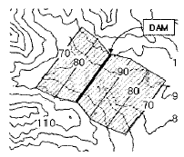
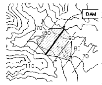
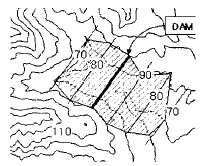
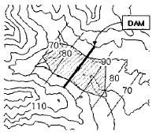
(정답률: 48%)
78. 삼각 수준 측량에서 대기의 굴절에 의한 오차와 지구의 곡률에 의한 오차의 조정은?
- 관측치에 기차와 구차는 모두 낮게 조정한다.
- 관측치에 기차와 구차는 모두 높게 조정한다.
- 관측치에 기차는 낮게 구차는 높게 조정한다.
- 관측치에 기차는 높게 구차는 낮게 조정한다.
(정답률: 67%)
79. 그림은 삼각측량에서 좌표계산을 위한 것이다 A점의 좌표(XA, YA) 를 알고 C점의 좌표를 계산하는 식으로 옳은 것은? (단, T는 방향각이 S는 변장임)
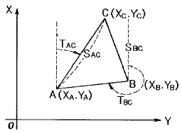
- XC = XA + SAC cos TAC, YC = YA + SAC sin TAC
- XC = XA + SAC sin TAC, YC = YA + SAC cos TAC
- XC = XA - SAC cos TAC, YC = YA - SAC sin TAC
- XC = XA - SAC sin TAC, YC = YA - SAC cos TAC
(정답률: 52%)
80. 폐합트래버스측량에서 임의 측선에 대한 방위각을 계산하기 위한 방법으로 틀린 것은?
- 시계방향으로 진행할 경우 내각 관측시= 하나 앞측선의 방위각 + 180° - 내각
- 시계방향으로 진행할 경우 외각 관측시= 하나 앞측선의 방위각 + 180° + 외각
- 반시계방향으로 진행할 경우 내각 관측시= 하나 앞측선의 방위각 + 180° - 내각
- 반시계방향으로 진행할 경우 외각 관측시= 하나 앞측선의 방위각 + 180° - 외각
(정답률: 53%)
5과목: 측량학
81. 일반측량성과 및 일반측량기록 사본의 제출을 요구할 수 있는 경우의 목적에 해당하지 않는 것은?
- 측량의 기술 개발
- 측량의 정확도 확보
- 측량의 중복 배제
- 측량에 관한 자료의 수집. 분석
(정답률: 53%)
82. ⎾측량. 수로조사 및 지적에 관한 법률⏌ 제정의 목적과 관련이 없는 것은?
- 측량 및 수로조사의 기준 및 절차와 지적공부의 작성 및 관리 등에 관한 사항을 규정
- 국민의 소유권 보호에 기여하기 위하여
- 국토의 효율적인 관리와 해상교통의 안전을 위하여
- 측량업자의 권익 향상
(정답률: 58%)
83. 우리나라 기준점에 대한 설명으로 옳지 않은 것은?
- 대한민국 수준원점은 인천광역시에 있다.
- 대한민국 수준원점의 높이는 26.6871m이다.
- 대한민국 경위도 원점은 서울특별시에 있다.
- 대한민국 경위도 원점은 경도, 위도, 원방위각의 값으로 나타낸다.
(정답률: 58%)
84. 기본측량성과의 검증을 위해 검증을 의뢰받은 기본 측량성과 검증 기관은 몇 일 이내에 검증 결과를 국토지리정보원장에게 제출 하여야 하는가?
- 10일
- 20일
- 30일
- 60일
(정답률: 35%)
85. 공공측량시행자는 공공측량성과를 얻은 경우에는 지체없이 그 사본을 누구에게 제출하여야 하는가?
- 국토해양부장관
- 시.도지사
- 행정안전부장관
- 측량협회장
(정답률: 60%)
86. 지명을 심의.의결하여 결정하는 곳은?
- 토지수용위유원회
- 국가지명위원회
- 중앙지적위원회
- 지명변경위원회
(정답률: 73%)
87. GPS수신기에 대한 측량기기 성능기준에 대한 설명으로 옳지 않은 것은?
- 1급 수신기의 주파수 수신대역수는 2주파, 측정거리는 10km 이상이다.
- 1급 수신기는 10km 이상의 측정거리에서 5mm±1ppm·D의 정밀도를 가져야 한다.
- 2급 수신기는 10km 이하의 측정거리에서 5mm±2ppm·D의 정밀도를 가져야 한다.
- 2급 수신기의 주파수 수신대역수는 2주파, 측정거리는 10km 이하이다.
(정답률: 36%)
88. 기사 자격을 취득하고 5년동안 측량업무를 수행한 사람에 대한 측량 기술자 기술등급은?
- 특급기술자
- 고급기술자
- 중급기술자
- 초급기술자
(정답률: 52%)
89. 지도의 난외주기에 표시할 사항이 아닌 것은?
- 지도의 도각
- 도엽의 명칭
- 발행자
- 지번
(정답률: 40%)
90. 측량업의 종류로 옳지 않은 것은?
- 지하시설물측량업
- 공간영상도화업
- 연안조사측량업
- 영상지도제작업
(정답률: 35%)
91. 공공측량의 설명으로 옳지 않은 것은?
- 선행된 공공측량의 성과를 기초로 측량을 실시할 수 있다.
- 선행된 기본측량의 성과를 기초로 측량을 실시할 수 있다.
- 공공측량의 측량성과를 교부받고자 하는 자는 국토지리정보 원장에게만 신청할 수 있다.
- 공공측량시행자는 공공측량을 하려면 미리 측량지역, 측량기간, 그 밖에 필요한 사항을 시.도지사에세 통지 하여야 한다.
(정답률: 67%)
92. 1:50,000 지형도 도식적용규정에서 수부에 대한 세칙으로 옳지 않은 것은?
- 수애선은 바다에 있어서는 만조시의 실제 모습을 표시한다.
- 폭포는 높이 5m 이상을 표시한다.
- 하천의 유수방향을 독도하기 어려울 경우에는 기호로서 표시한다.
- 댐은 그 높이가 10m 이상, 길이가 도상 2mm이상 되는 것만 표시한다.
(정답률: 53%)
93. 측량 기준점의 구분에 따른 측량기준점 중 국가 기준점이 아닌 것은?
- 위성기준점
- 수로기준점
- 통합기준점
- 지적기준점
(정답률: 37%)
94. “측량기록”의 법적인 용어 정의로 옳은 것은?
- 측량을 통하여 얻은 최종결과
- 측량기본계획 수립의 작업 기록
- 측량성과를 얻을 때까지의 측량에 관한 작업의 기록
- 측량 외업에서의 작업 기록
(정답률: 50%)
95. 기본측량의 실시공고는 해당 특별시·광역시·도 또는 특별자치도의 게시판 및 인터넷 홈페이지에 몇 일 이상 게시하여야 하는가?
- 3일
- 7일
- 15일
- 30일
(정답률: 50%)
96. 측량·수로조사 및 지적에 관한 법률상의 용어 정의로 옳지 않은 것은?
- 일반측량이란 기본측량 및 공공측량에서 제외된 측량을 말한다.
- 수로측량이란 해양의 수심·지구자기·중력·지형·지질의 측량과 해안선 및 이에 딸린 토지의 측량을 말한다.
- 지적측량이란 토지를 지적공부에 등록하거나 지적공부에 등록된 경계점을 지상에 복원하기 위하여 필지의 경계 또는 좌표와 면적을 정하는 측량을 말한다.
- 기본측량이란 모든 측량의 기초가 되는 공간 정보를 제공하기 위하여 국토해양부장관이 실시하는 측량을 말한다.
(정답률: 44%)
97. 측량업의 등록을 1년 이내의 기간을 정하여 영업의 정지를 명할 수 있는 경우가 아닌 것은?
- 고의 또는 과실로 인하여 측량을 부정확하게 한 경우
- 정당한 사유 없이 1년 이상 휴업한 경우
- 측량업 등록사항의 변경신고를 하지 아니한 경우
- 다른 행정기관이 관계 법령에 따라 등록취소를 요구한 경우
(정답률: 43%)
98. 기본측량성과 및 공공측량성과의 고시에 필수적 사항이 아닌 것은?
- 측량성과의 보관장소
- 설치한 측량기준점의 수
- 측량실시의 시기 및 지역
- 측량실시의 기관 및 측량자
(정답률: 40%)
99. 공공측량에 관란 공공측량 작업계획서를 작성하여야 하는자는?
- 측량협회
- 공공측량시행자
- 측량업자
- 국토지리정보원장
(정답률: 67%)
100. ⎾측량기준점표지를 이전 또는 파손하거나 그 효용을 해치는 행위를 한 자⏌ 에 대한 벌칙은?
- 1년 이하의 징역 또는 1천만원 이하의 벌금
- 2년 이하의 징역 또는 2천만원 이하의 벌금
- 3년 이하의 징역 또는 3천만원 이하의 벌금
- 300만원 이하의 과태료
(정답률: 43%)
2주파용 수신기는 1주파용 수신기보다 더 많은 위성 신호를 수신할 수 있으며, 따라서 더 정확한 위치 측정이 가능하다. 또한, 안테나의 크기와 위치도 정확하게 조정되어야 하며, 이를 위해서는 정밀한 측정이 필요하다. 따라서 위성궤도력을 보통력이 아닌 정밀력으로 사용하는 것이 더욱 정확한 결과를 얻을 수 있다.